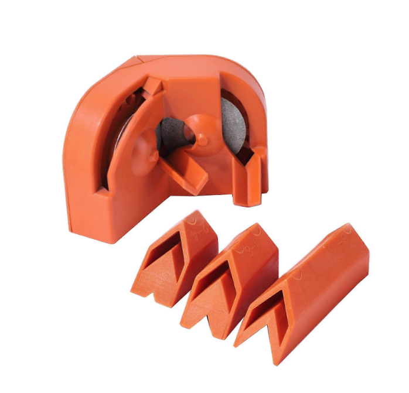

Ascuțitor Multifuncțional pentru Burghie, Portabil, 6 cm
Ascuțitor portabil de aproximativ 6 cm, cu sistem abraziv și trei adaptoare de ghidare, conceput pentru reascuțirea burghielor compatibile.
Solicită disponibilitatea, prețul final și condițiile comerciale înainte de comandă.
DETALII PRODUS
Descriere
Ascuțitorul multifuncțional pentru burghie, cu dimensiunea de aproximativ 6 cm este un accesoriu compact destinat întreținerii și reascuțirii burghielor utilizate în activități de găurire și bricolaj. Conceput pentru utilizare împreună cu o mașină de găurit compatibilă, produsul oferă o soluție practică pentru îmbunătățirea stării muchiilor de tăiere ale burghielor uzate, contribuind la prelungirea perioadei de utilizare a acestora.
Sistemul de ascuțire reprezintă elementul central al accesoriului, fiind prevăzut cu componente abrazive integrate, concepute pentru contactul controlat cu vârful burghiului. Prin utilizarea împreună cu o mașină de găurit și respectarea instrucțiunilor producătorului, dispozitivul permite efectuarea operațiunilor de reascuțire fără utilizarea unui echipament profesional de dimensiuni mari.
Designul multifuncțional include trei adaptoare de ghidare pentru burghie de dimensiuni diferite, oferind flexibilitate în realizarea operațiunilor de întreținere. Aceste accesorii sunt concepute pentru poziționarea burghielor în raport cu mecanismul abraziv, contribuind la menținerea unui unghi de lucru adecvat în timpul ascuțirii.
Construcția compactă și portabilă permite utilizarea produsului în ateliere, garaje și spații destinate proiectelor DIY. Dimensiunile reduse facilitează transportul și depozitarea accesoriului în cutii pentru scule, sertare sau organizatoare pentru echipamente de bricolaj.
Carcasa exterioară este realizată dintr-un material rigid, de culoare portocalie, fiind concepută pentru susținerea și protejarea componentelor interne ale dispozitivului. Forma semicirculară și compartimentarea dedicată sistemului de ascuțire oferă un design funcțional, adaptat utilizării împreună cu sculele electrice compatibile.
Un avantaj practic al ascuțitorului îl reprezintă posibilitatea întreținerii burghielor existente, reducând necesitatea înlocuirii acestora imediat după apariția semnelor obișnuite de uzură. Rezultatele depind de materialul burghiului, gradul de deteriorare, compatibilitatea acestuia cu dispozitivul și modul de utilizare.
Accesoriul poate fi integrat în activitățile obișnuite de întreținere a sculelor, fiind destinat utilizatorilor care lucrează periodic cu mașini de găurit în proiecte de montaj, reparații sau prelucrare a diferitelor materiale. Formatul său permite păstrarea la îndemână și utilizarea atunci când este necesară recondiționarea muchiilor de tăiere.
Din perspectiva distribuției B2B, ascuțitorul multifuncțional pentru burghie reprezintă o opțiune pentru magazinele de bricolaj, distribuitorii de scule și unelte, comercianții en-gros, magazinele de articole pentru atelier și platformele marketplace. Dimensiunea compactă, sistemul de ghidare și posibilitatea utilizării împreună cu o mașină de găurit îl recomandă pentru completarea portofoliilor dedicate accesoriilor pentru scule electrice.
Caracteristici principale
- Ascuțitor multifuncțional pentru burghie: accesoriu conceput pentru întreținerea și reascuțirea burghielor compatibile.
- Dimensiune de aproximativ 6 cm: format compact, potrivit pentru depozitare și transport.
- Sistem de ascuțire abraziv: componente destinate prelucrării muchiilor de tăiere ale burghielor.
- Trei adaptoare de ghidare: accesorii pentru poziționarea burghielor de diferite dimensiuni.
- Utilizare cu mașina de găurit: conceput pentru funcționare împreună cu o unealtă electrică compatibilă.
- Design portabil: ușor de păstrat în truse și cutii pentru scule.
- Construcție compactă: ocupă un spațiu redus în atelier sau garaj.
- Carcasă rigidă: structură exterioară destinată susținerii mecanismului de ascuțire.
- Culoare portocalie: aspect distinctiv, ușor de identificat printre accesoriile pentru bricolaj.
- Întreținerea burghielor uzate: permite reascuțirea burghielor compatibile, în funcție de gradul de uzură.
- Ghidare pentru ascuțire: adaptoarele contribuie la poziționarea burghiului în timpul utilizării.
- Utilizare în atelier: potrivit pentru activități de întreținere a uneltelor.
- Accesoriu pentru bricolaj: destinat proiectelor DIY, reparațiilor și lucrărilor de montaj.
- Utilizare practică: conceput pentru operațiuni de reascuțire fără echipamente voluminoase dedicate.
- Depozitare facilă: poate fi păstrat în sertare, organizatoare sau truse de scule.
- Întreținerea sculelor de găurire: contribuie la păstrarea funcționalității burghielor compatibile.
- Funcționare mecanică: utilizează mișcarea transmisă de o mașină de găurit compatibilă.
- Format economic: oferă o alternativă de întreținere pentru burghiele care permit reascuțirea.
- Utilizare pentru burghie de diferite dimensiuni: prin intermediul adaptoarelor incluse, în limitele specificate de producător.
- Accesoriu pentru scule electrice: potrivit pentru comercializare în categoria produselor de bricolaj și întreținere a uneltelor.
Comandă și informații
Site-ul funcționează ca un catalog B2B. Nu există plată online sau coș de cumpărături.
Discută pe WhatsApp →DIN ACEEAȘI CATEGORIE